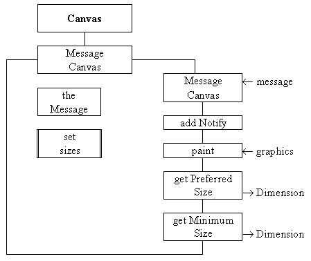

The MessageCanvas class is the most complex of the classes required for the StikNote application. It is not possible to use a Label instance to show the note's contents as a Label can only show a single line of text. It would be possible to use a non-editable TextArea but it would be difficult to ensure that it was just sufficiently large to contain the text. The solution to these shortcomings is to extend the Canvas class to produce a specialized Canvas class which is capable of displaying a multi-line String in just sufficient space. This is the only class in the StikNote application which is sufficiently complex to merit a class diagram, as shown in Figure 3.6.

Figure 3.6 The MessageCanvas class diagram.
The diagram indicates that it supplies a single constructor and four public methods addNotify(), paint(), getPreferredSize() and getMinimumSize(). These are a minimum set of Component methods which should be overridden for any specialized component to be able to inter-operate effectively with other components. The constructor requires a String as an argument and will display this String in a window just large enough to accommodate it. Once the MessageCanvas has been constructed there is no facility in this implementation for the contents of its window to be queried or changed.
The addNotify() method is called by the Java run-time environment when the component's peer object has been created. It can be used to ensure that certain methods, such as the private setSizes() method in this class, are not called until it is certain that the peer has been created. The paint() method is called by the Java run time environment every time it is necessary to restore the contents of the component. This will happen when the component is shown for the first time and thereafter whenever it becomes visible after being hidden by another window.
The getPreferredSize() and getMinimumSize() methods may be called during layout negotiations. These happen when the contents of a Container are packed before being shown. Briefly a Container determines its own preferred size by asking all of its children for their preferred size and performing the appropriate calculations. For example a FlowLayout manager with three children would set its preferred width, based upon the combined preferred width of all of its children and would set its preferred height to the tallest. Sometimes the preferred size of a component cannot be easily accommodated and then the getMinimumSize() method is asked for the component's minimum requirements. There is never a guarantee that the component will be given even its minimum requirements and any methods which need to know the size of the component should ask for it, as will be demonstrated below.
The implementation of the MessageCanvas class, which is not included in the StikNote package, as far as the end of its constructor, is as follows.
0001 // Filename MessageCanvas.java.
0002 // Provides a reusable centred multi-line label component.
0003 //
0004 // Written for the JI book, first used in Chapter 3.
0005 // Fintan Culwin, v 0.2, August 1997.
0006
0007
0008 import java.awt.*;
0009 import java.awt.event.*;
0010 import java.util.StringTokenizer;
0011
0012
0013 public class MessageCanvas extends Canvas {
0014
0015 private int maximumWidth = 0;
0016 private int characterHeight;
0017 private String theMessage[];
0018
0019
0020 public MessageCanvas( String message) {
0021
0022 StringTokenizer tokenizer = new StringTokenizer( message, "\n");
0023 int numberOfLines = tokenizer.countTokens();
0024 int index;
0025
0026 theMessage = new String[ numberOfLines];
0027 for ( index =0; index < numberOfLines; index++){
0028 theMessage[ index] = ((String) tokenizer.nextToken()).trim();
0029 } // End for.
0030 } // End MessageCanvas constructor.
A muti-line message String will have to be rendered onto the MessageCanvas one line at a time and so the major responsibility of the constructor is to store each line of the message in a separate element of the String array instance attribute theMessage. To accomplish this a StringTokenizer instance is constructed, on line 0022, which will split the String argument message on its newline ("\n") boundaries.
Having prepared the tokenizer its countTokens() method can be used to find out the numberOfLines in the message and this value is subsequently used to specify the size of theMessage array. Each line from the message String can then be extracted in turn, using the tokenizer nextToken() method, and stored in the array. There is no need for this class to configure its physical appearance as it will inherit the required attributes from its instance parent.
The purpose of the addNotify() method is to ensure that certain steps are not taken until the peer interface component is created. In this class the setSizes() method has the responsibility of ensuring that the getPreferredSize() and getMinimumSize() methods can reply in order that the MessageCanvas will be just large enough to accommodate theMessage. It does this by setting the value of the maximumWidth attribute to the screen width of the longest line of the message and the characterHeight attribute to the height of one character of the font being used. This cannot happen until its peer has been constructed as, until then, specific details of the precise font which will be used cannot be known. Accordingly, the implementation of the addNotify() and setSizes() methods is as follows.
0033 public void addNotify() {
0034 super.addNotify();
0035 this.setSizes();
0036 } // End addNotify.
0037
0038
0039 private void setSizes(){
0040
0041 FontMetrics theMetrics = this.getFontMetrics( this.getFont());
0042 int thisWidth;
0043 int index;
0044
0045 characterHeight = theMetrics.getHeight();
0046 for ( index =0; index < theMessage.length; index++){
0047 thisWidth = theMetrics.stringWidth( theMessage[ index]);
0048 if ( thisWidth > maximumWidth) {
0049 maximumWidth = thisWidth;
0050 } // End if.
0051 } // End for.
0052 } // End setSizes.
The addNotify() method calls its parent's (Canvas) addNotify() method and then calls the setSizes() method. This method obtains a FontMetrics instance by using its own getFont() and getFontMetrics() methods. A FontMetrics instance encapsulates information concerning the size each character in the font will take up when rendered. Every character has the same height and this value is obtained, and stored in the instance attribute characterHeight, on line 0045. The loop between lines 0046 and 0051 uses theMetrics() stringWidth() method to determine the width of the maximum line when rendered, and stores this value in the maximumWidth attribute. The getPreferredSize() and getMinimumSize() methods make use of these attributes, as follows.
0055 public Dimension getPreferredSize() {
0056 return new Dimension( maximumWidth +20,
0057 (characterHeight * theMessage.length) +20);
0058 } // End getPreferredSize.
0059
0060 public Dimension getMinimumSize() {
0061 return new Dimension( maximumWidth,
0062 (characterHeight * theMessage.length));
0063 } // End getMinimumSize.
The getMinimumSize() method returns the maximumWidth and the characterHeight times the number of lines as the Dimension's horizontal and vertical components respectively. The getPreferredSize() method returns the same values plus 20 (pixels) in order to allow for a border around the message. The paint() method is responsible for rendering the message onto the window and will be called by Java whenever it is required. Its implementation is as follows.
0066 public void paint( Graphics context) {
0067
0068 int index;
0069 int leftOffset;
0070 int totalHeight = theMessage.length * characterHeight;
0071 int itsWidth = this.size().width;
0072 int fromTop = ((this.size().height - totalHeight) /2) +
0073 characterHeight/2;
0074 FontMetrics theMetrics = this.getFontMetrics( this.getFont());
0075
0076 for ( index =0; index < theMessage.length; index++){
0077 leftOffset = ( itsWidth - theMetrics.stringWidth(
0078 theMessage[ index]))/2;
0079 context.drawString( theMessage[ index],
0080 leftOffset, fromTop);
0081 fromTop+= characterHeight;
0082 } // End for.
0083 } // End paint.
The implementation of this method makes use of a Graphics instance called context; the use of graphics contexts will be described in detail in the next chapter. Briefly they encapsulate the precise knowledge required to produce output on the Component's window. Java will ensure that an appropriate Graphics instance is passed as an argument whenever the paint() method is called.
The first part of the method ensures that the message will be (approximately) horizontally and vertically centered within the window. To accomplish this the Component size() method is used to determine the actual size of the window as no assumptions should be made regarding its size. The size() method returns a Dimension instance whose public width and height attributes can be accessed directly, as on lines 0071 and 0071. At the end of the local declarations, on line 0072, the variable fromTop contains the offset from the top of the window for the first line of the message, and the itsWidth to the width of the window,
The loop between lines 0076 and 0082 renders each line in turn from theMessage array using the Graphics context drawString() method. The three arguments to this method are the String to be rendered and the integer horizontal and vertical locations to start at. Lines 0077 and 0078 ensure that each line is horizontally centered within the window and 0081 that each line is vertically spaced from the previous line by the height of one character. The effect is that this method will paint() the message into a MessageCanvas window which hopefully has at least its getMinimumSize() dimensions for it to be rendered within.
This completes the implementation of the StikNote application. It illustrates the techniques with can be used to extend a pre-supplied Component class to supply an extended class whose behavior is more suited to the requirements of a particular application. The MessageCanvas class, developed for this application, will be reused in other applications throughout the rest of this book. Some of its design decisions were made with this consideration in mind. In general an extended Component class should be designed and implemented in a manner which allows for it to be easily re-used. The techniques for extending the pre-supplied Component classes will be further considered in the remainder of this chapter.